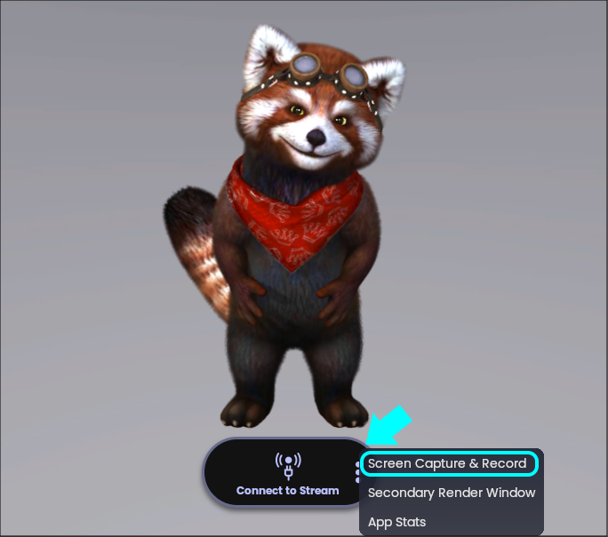
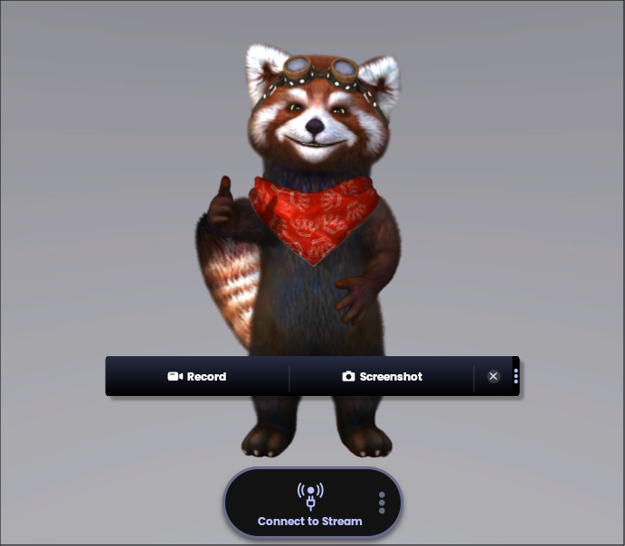
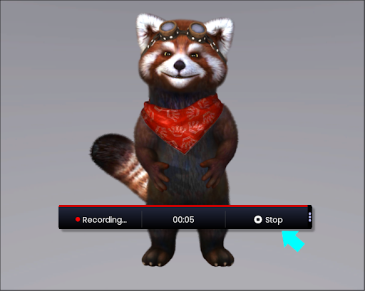
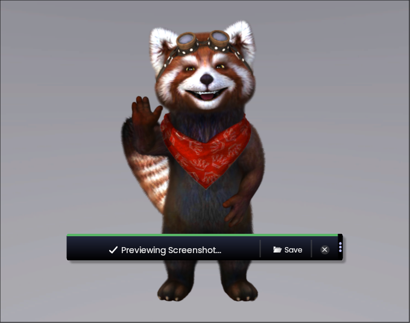
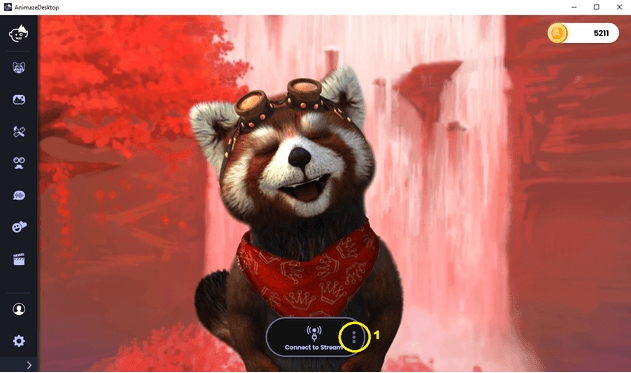

スクリーンショットや動画を撮影するにはどうすればよいですか?
Animazeアプリでは、次の手順でアバターの動画を撮影できます:
1.画面下部のメニューにある、動画カメラのアイコンの「録画」ボタンをクリックします


2.録画を停止するには、「停止」ボタンをクリックします

3.動画を削除するには「キャンセル」ボタンをクリックし、動画を保存するには「保存」ボタンをクリックします
4.動画を保存するフォルダーを指定します。
Animazeアプリでは、次の手順でアバターのかわいい写真を撮影できます:
1.画面下部のメニューにある、カメラのアイコンの「スクリーンショット」ボタンをクリックします

2.「保存」をクリックし、スクリーンショットを保存するフォルダーを指定します
